Pastry
CAP Pâtissier. Sixteen English words of the trade: tools, objects and everyday gestures. Open to everyone.
Four steps: from French to English, listen and choose, match, and complete a sentence at work. The Listen button reads the word in British English.
Word list
| Image | Français | English | Audio |
|---|---|---|---|
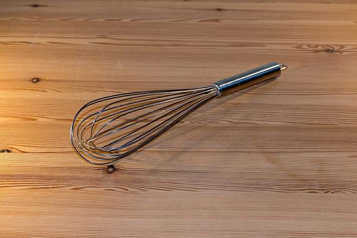 | le fouet | whisk | |
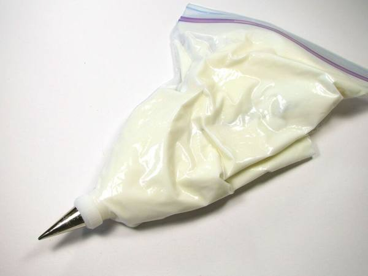 | la poche à douille | piping bag | |
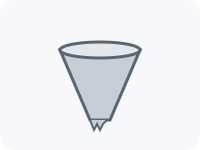 | la douille | nozzle | |
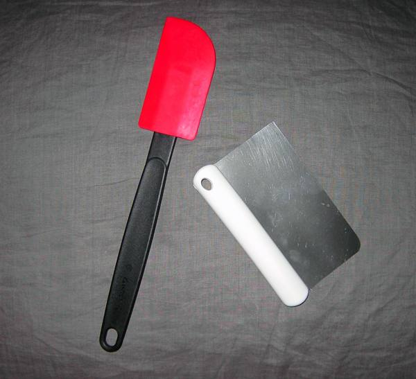 | la spatule | spatula | |
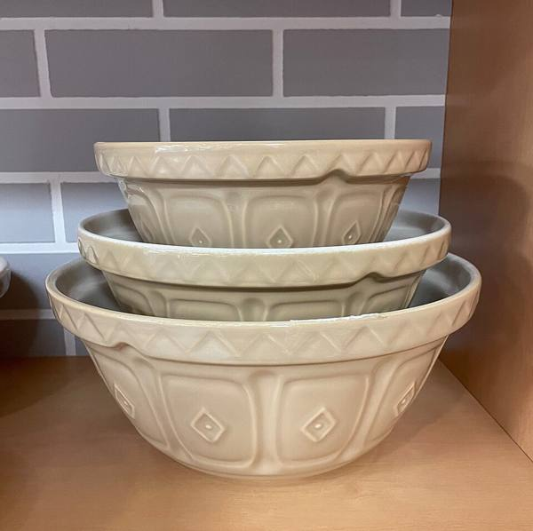 | le cul-de-poule | mixing bowl | |
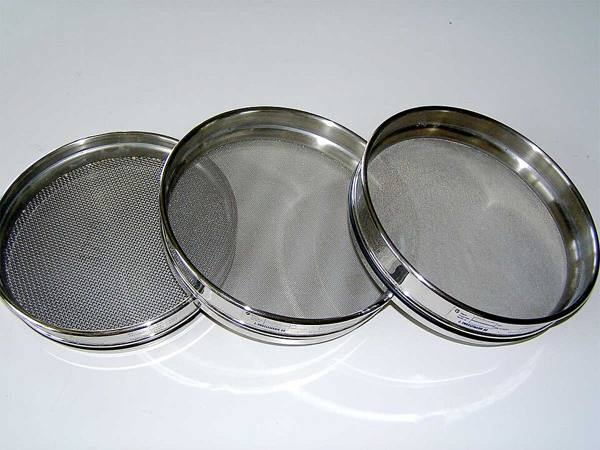 | le tamis | sieve | |
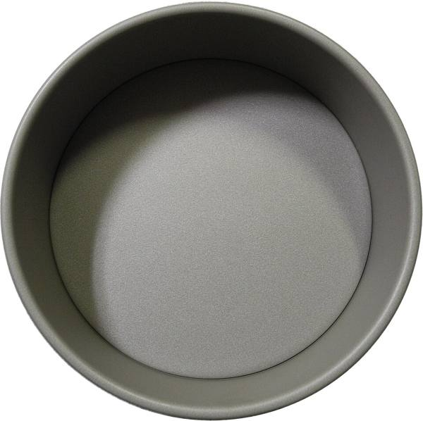 | le moule à gâteau | cake tin | |
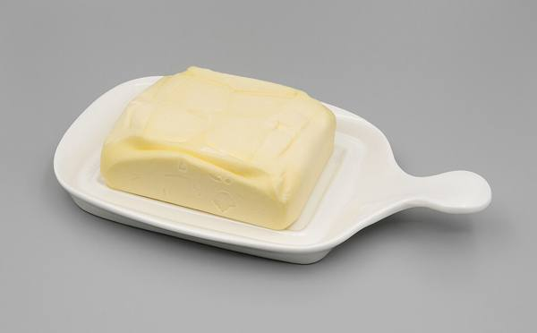 | le beurre | butter | |
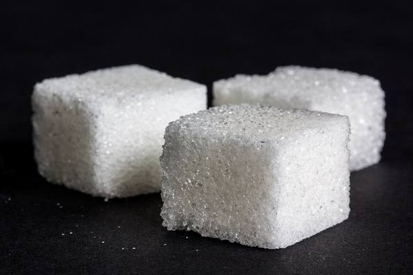 | le sucre | sugar | |
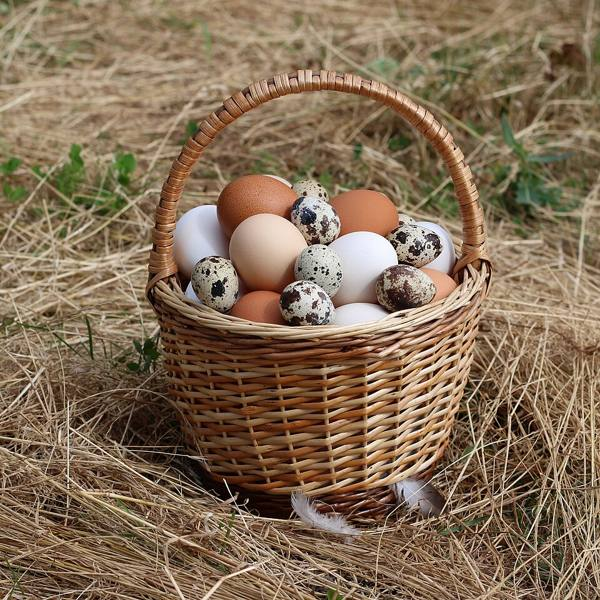 | les œufs | eggs | |
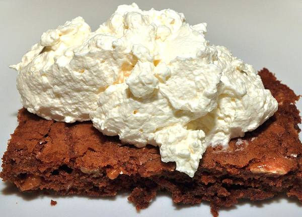 | la crème fouettée | whipped cream | |
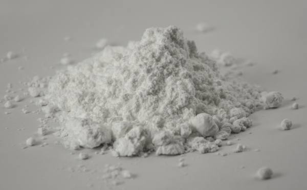 | le sucre glace | icing sugar | |
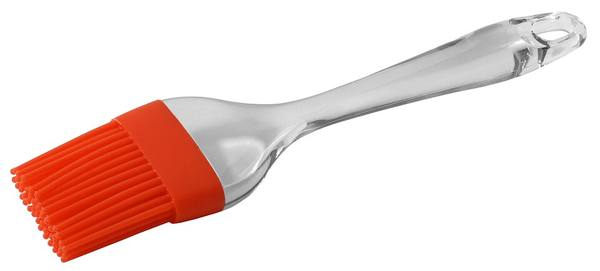 | le pinceau à pâtisserie | pastry brush | |
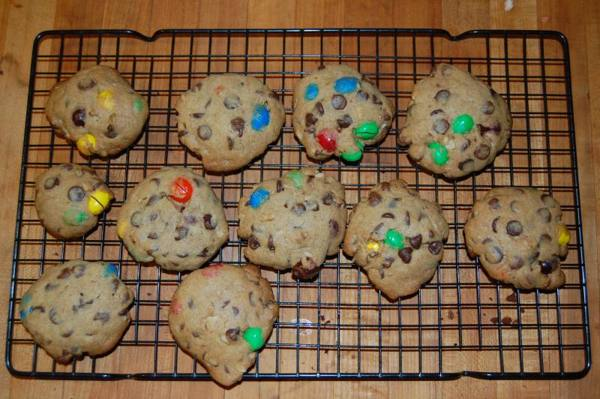 | la grille à pâtisserie | cooling rack | |
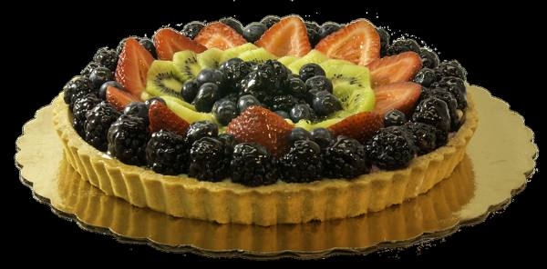 | la tarte | tart | |
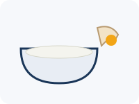 | le blanc d'œuf | egg white |
Teacher key: sentences at work
- Beat the eggs with a ________. (whisk)
- Fill the ________ with cream. (piping bag)
- Pour the mixture into the ________. (cake tin)
- Sift the flour through the ________. (sieve)
- Put the cake on the ________. (cooling rack)
- Sprinkle ________ on the cake. (icing sugar)
In steps 1, 2 and 3, the right answer is the line in the word list.
Image credits
Photos under an open licence, from Wikimedia Commons, resized for the phone. Original drawings for gestures and ideas.
- le fouet (whisk) : photo by Matti Blume, licence CC BY-SA 4.0, file page on Wikimedia Commons.
- la poche à douille (piping bag) : photo by oskay, licence CC BY 2.0, file page on Wikimedia Commons.
- la douille (nozzle) : original drawing, Grand Tour, CC BY-NC-SA 4.0.
- la spatule (spatula) : photo by Micke, licence Public domain, file page on Wikimedia Commons.
- le cul-de-poule (mixing bowl) : photo by RLiverpool2021, licence CC BY-SA 4.0, file page on Wikimedia Commons.
- le tamis (sieve) : photo by BMK, licence CC BY-SA 3.0, file page on Wikimedia Commons.
- le moule à gâteau (cake tin) : photo by Douglas P Perkins, licence CC BY 3.0, file page on Wikimedia Commons.
- le beurre (butter) : photo by Jacek Halicki, licence CC BY-SA 4.0, file page on Wikimedia Commons.
- le sucre (sugar) : photo by Dietmar Rabich, licence CC BY-SA 4.0, file page on Wikimedia Commons.
- les œufs (eggs) : photo by George Chernilevsky, licence CC BY-SA 4.0, file page on Wikimedia Commons.
- la crème fouettée (whipped cream) : photo by jeffreyw, licence CC BY 2.0, file page on Wikimedia Commons.
- le sucre glace (icing sugar) : photo by Ɱ, licence CC BY-SA 4.0, file page on Wikimedia Commons.
- le pinceau à pâtisserie (pastry brush) : photo by Evan-Amos, licence Public domain, file page on Wikimedia Commons.
- la grille à pâtisserie (cooling rack) : photo by jeffreyw, licence CC BY 2.0, file page on Wikimedia Commons.
- la tarte (tart) : photo by kartynas, licence CC0, file page on Wikimedia Commons.
- le blanc d'œuf (egg white) : original drawing, Grand Tour, CC BY-NC-SA 4.0.
Vocabulary sheet to print
Large type (16 point minimum), in three formats: